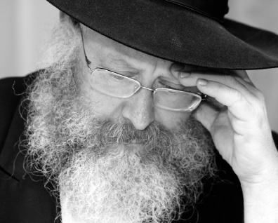

Moshiach: The Innermost Core of Hiskashrus
In our generation there are those who don’t feel comfortable talking about Moshiach. However, this is precisely the point. It makes no difference what you feel. We have to do what the Rebbe told us to do. We carry out his wishes and this is what hiskashrus is about. * Although this interview was con

Rabbi Chaim Yitzchok Isaac Landau, scion of a well-known family of rabbanim, a scholar known for the clarity of his shiurim, continues the glorious chain. He serves as maggid shiur in Yeshivas Chabad in Tzfas; hundreds of Lubavitcher families and shluchim ask him their halachic questions; he is a mashpia to hundreds of his talmidim who consult with him; and most of his time is devoted to the public.
R’ Landau dissects the essence of a Chassid’s soul, gently peeling the Chassidic layers, digging deeper and deeper until he uncovers the inner heart of a Chassid, providing us with a clear view of what should drive a Chassid in his divine service.
***
Is hiskashrus an aspect of avoda, or is it something more all-encompassing than that?
Hiskashrus is one of the more spoken-about concepts in the Chassidic lexicon. It is a concept that comes up on many occasions – farbrengens, conversations among Chassidim, and also in a Chassid’s personal feelings. When a Chassid is inspired, often what he feels is that he wants to strengthen his hiskashrus. This is then broken down into details; strengthening learning, mivtzaim, Ahavas Yisroel etc., but the general point is hiskashrus.
Hiskashrus is not a detail or a certain aspect, as you mentioned. Hiskashrus is all of life. Our entire life is hiskashrus to the Rebbe. This ought to be a given for every Chassid.
There are people who think that Chabad consists of deep teachings that give one chayus in avodas Hashem. They learn Chassidus and sometimes they even daven with the maamarim that they learned, but that is where it remains. What does this mean? After all, he is following the philosophy of the Alter Rebbe! He learns Likkutei Torah and Torah Ohr!
However, the meaning of “Chassid” is – who are you a Chassid of? Learning Chassidus and davening are big things, but that is not what being a Chassid is. When you say “Chassid,” it means you belong to someone. If you are a Chassid of the Rebbe, that is when the Chassidus you learn has a real effect on you, and the t’filla that you daven with a maamer Chassidus which you learned lifts you up. If the hiskashrus to the Rebbe is lacking, if the “Chassid” isn’t there, then everything is missing.
I am not saying that if this inyan of hiskashrus is lacking then you shouldn’t learn Chassidus. When someone from the “outside” comes and learns Chassidus, that’s a big thing, and ultimately “the light in Torah brings them back to good.” He will learn Chassidus, which will illuminate his neshama, and then he will understand that in order for Chassidus to really stick to him and infuse him with life, he needs to be connected to the Rebbe; he needs hiskashrus.
In yeshiva, in order to illustrate to the bachurim what hiskashrus is, I tell the following story. In the time of the Mezritcher Maggid, there was a meeting of the great disciples and they decided that each one of them, in their location, would seek out the great people and connect them to the Maggid. Chassidus had to be spread and how would they do that? When the leaders and Torah scholars would become Chassidim, this would attract everyone else. Therefore, each one of these great people was committed to the task in his designated area.
There was one disciple (I don’t remember his name at the moment), one of the great Chassidim, who had a rav in his town who was a towering scholar. He was a Torah genius and, as was typical of Misnagdim, he also knew how great he was. This talmid of the Maggid decided that he had to connect this man to the Maggid, so he befriended him and spoke to him in learning. Then one day, he asked the scholar an extremely difficult question. The gaon remained open mouthed and asked for time to think it over. He thought and thought and two weeks went by. The Chassid would visit him and bother him with the question. The gaon had no solution and he confessed, “I have no answer for you. Do you have an answer?”
The Chassid said, “Yes, I have an answer,” and he told him the answer.
The Misnaged couldn’t get over it – after two weeks of hard work and not coming up with an answer, to suddenly hear it like that was astounding. He asked the Chassid, “Where do they teach that?”
The Chassid said, “In Mezritch!”
The Torah was precious to the gaon and so he said, “I am going to Mezritch!”
Traveling for two weeks with the difficulties such a trip entailed was hard for him because his learning during that period was thereby diminished. However, since Torah was most precious to him, he was willing to make the effort to travel to Mezritch.
The Chassid said to him, “I am a Chassid and disciple there in Mezritch, and I want to send a letter with you to my Rebbe.” The gaon agreed and the Chassid wrote a letter, put it into an envelope, sealed it, and gave it to him. The gaon left and two weeks later he arrived at the Maggid.
The procedure in those days was that everyone would pass by the Rebbe to “give Shalom.” (Afterward, it changed in Chabad. The Besht was “Polish” and so was the Maggid. By the Alter Rebbe it became “Litvish.”) Thus, he got on line to greet and be greeted by the Maggid and gave him the envelope from the Chassid.
The Maggid opened the envelope, looked at the paper, looked at the rav, looked at the paper once again, and then at the rav again. Then he said, as though to himself, “I don’t see it; perhaps the difficulties of the journey brought about a change.” The rav not knowing what it said in the letter didn’t know why the rav was looking at him, and he was beginning to wonder what the Chassid had written about him to the Maggid.
He remained there and became a Chassid. After a period of time, he returned to his home, and as soon as the opportunity arose he asked the Chassid, “Tell me: what did you write in that note?”
The Chassid smiled and said, “Normally, I wouldn’t tell you, but since you have become one of us, I can tell you. I wrote, ‘This person is “entirely wounds and welts and open sores, there is no part of him that is whole’” – meaning, he is a Misnaged who learns Nigleh and he puffs up with pride with every new Torah thought that he innovates.”
***
From this story we see that although the gaon had not yet learned Chassidus, and he still had not davened with avoda, and he did not yet go in the ways of Chassidus at all, just traveling to the Rebbe made a change in him. Previously, he was a Misnaged who was wounds and welts etc. and then he became cleansed. He was no longer a Misnaged. He was receptive to learning Chassidus. It was his hiskashrus to the Rebbe that turned him into a metzius of a Chassid.
Is there a metzius of a Chassid?! Isn’t there an expression, “Omek Chassid – Rebbe” (the deepest core of a Chassid is the Rebbe himself)?
It is true – “Omek Chassid, Rebbe.” Some people think this means deep inside a Chassid is the Rebbe, but what it actually means is that the deepest innermost core of a Chassid is hiskashrus to the Rebbe. That is the Omek Chassid. There is a lot to being a Chassid: a Chassid has Ahavas Yisroel; a Chassid learns Chassidus; a Chassid davens; a Chassid consists of many things, but the depth of a Chassid, that which fuels it all, is the Rebbe, hiskashrus to the Rebbe.
Hiskashrus consists of Bittul HaRatzon (nullifying one’s will). The Rebbe said something and therefore, my personal desires play no role.
I remember the period before the Israeli elections in the 80’s in which the Rebbe instructed to vote for Gimmel and get others to do so. This went counter to everything we had been accustomed to, until that point. Until then, we had always said we are not political; we love every Jew and have no connection to political parties. It was very hard to carry this out and yet we did it because it was what the Rebbe wanted. It didn’t matter what we thought and felt. Bittul HaRatzon to the meshaleiach was the point; I am mekushar and carry out his will.
The same is true for Inyanei Moshiach. In our generation, there are those who don’t feel comfortable talking about Moshiach. However, this is precisely the point. It makes no difference what you feel. We have to do what the Rebbe told us to do. We carry out his wishes and this is what hiskashrus is about. Maybe, following the idea of “Omek Chassid – Rebbe,” we can say nowadays, after the Rebbe said that the avoda of shlichus is kabbalas p’nei Moshiach, that omek hiskashrus is Moshiach. If you are really mekushar, then everything revolves around Moshiach as the Rebbe said it should.
That’s no small thing. How do we attain such hiskashrus?
Hiskashrus is not automatic. It entails work and the avoda is to know and feel and internalize that all the avoda of a Chassid – learning, davening, mivtzaim, parnasa, influencing others – is done because the Rebbe wants it and not because of other reasons. Likewise, the kochos that we have, everything in material and spiritual life, comes from the Rebbe, from the “I [Moshe] stand between Hashem and you.” Moshe connects Yisroel and Hashem, and Moshe is the one in whose z’chus we had manna etc.
Some people wonder whether this is an exaggeration. Is everything from the Rebbe? The answer is from Yosef (for some reason, when people learn about things that took place long ago in the past, nobody expresses surprise about it). When you learn the inyan of “Yosef is the mashbir (provider)” – meaning that material and spiritual bounty come through Yosef HaTzaddik – that sits well with us. When we learn in the Zohar, “The face of G-d – this is Rabbi Shimon bar Yochai,” that sits well with us, and so on, with numerous examples. Yet, for some reason, when we say this now, that the Rebbe is the Moshe of the generation, the aspect of Yosef HaTzaddik “Yesod Olam,” he is the aspect of Rashbi of our generation, suddenly people look askance. We need to know that this is the way it is! Fortunate are we that we are connected with a deep, inner bond to the Rebbe, Nasi Doreinu.
My grandfather, R’ Yaakov Landau a”h, would repeat what he heard from the Rebbe Rashab that “Chassidus that is relevant is the Chassidus they heard from the Rebbe. All the rest of the teachings of Chassidus are learned in order to understand those maamarim that they heard from the Rebbe.” (As for those who did not hear maamarim from the Rebbe, they have the maamarim of the Rebbe that they learn). That’s what is relevant, because what is relevant to the neshama is hiskashrus to the Rebbe.
True, hiskashrus to the Rebbe is through Maamarei Chassidus and fulfilling the Rebbe’s instructions, but the maamarim that impact the neshama in that they can lift the Chassid up from the state he is in, are the maamarim that he heard from the Rebbe; what he himself heard or, for those who never heard a maamer from the Rebbe – those who learn a maamer of the Rebbe out of hiskashrus to him, that is what counts! The rest of Chassidus is learned to understand it, to understand the maamer. The idea was said by the Rebbe, and this has to be felt by us in our very bones.
In Yerushalayim, there was a Baal Musar whose name was Bruk, I think. He had a policy of not going to sleep before he did a favor for a Jew – truly a special person with sensitivity who wants to do chesed with a fellow Jew, who doesn’t go to sleep before doing a chesed. How did people know about this? Because sometimes, at midnight, he would be seen looking for someone with whom he could do a chesed. He wanted to go to sleep and he couldn’t, because he hadn’t done a favor. In the same way, a Chassid should feel that he cannot go to sleep before he has given expression to some point of hiskashrus to the Rebbe. This is our fuel for the entire day; it’s what connects us to life.
Traveling to the Rebbe nowadays is easy. Years ago, there were great scholars to whom every moment of learning was precious and yet they “killed,” if we can say such a thing, two weeks by traveling to the Rebbe. It was an avoda to travel to the Rebbe, to be with the Rebbe.
And yet, what is so urgent about going to the Rebbe? He had the Rebbe’s teachings – even many years ago they copied or printed the teachings, so a Chassid was able to learn the Rebbe’s Chassidus wherever he might be. Why should he “waste” two weeks going and two weeks returning, traveling in the heat or cold, in order to go to the Rebbe just to hear a Maamer Chassidus?
The answer is that it’s hiskashrus that matters, for that is what a Chassid is all about! The metzius of a Chassid is that he is connected to the Rebbe. Through his hiskashrus, all the Chassidus, everything that he learns at home, rises up. Everything looks different after being with the Rebbe and being mekushar to the Rebbe.
Does this apply to children?
Definitely! We have to examine how we instill hiskashrus in our family members, what emphasis we place on chinuch to hiskashrus. Sometimes, in the routine of life, we don’t pay attention. Chazal say, “When a baby starts to talk, his father should teach him, ‘Torah tziva lanu Moshe.’” Do we realize what this signifies? It doesn’t say that his father should teach him that Torah was given to us from heaven; it doesn’t say he should teach Modeh Ani, which you might think would be the first thing he should teach his child. He teaches his child that we received the Torah through Moshe and “Modeh Ani” comes after hiskashrus to Moshe.
This is the chinuch a father needs to instill in his children. Educate your children to hiskashrus! This is not something said about “shpitz Chabad,” and not something said by “extremists.” Chazal say that the chinuch of every Jewish child begins this way, by teaching a child “Torah tziva lanu Moshe.”
When we speak to children about hiskashrus, we shouldn’t preach. We need to explain to the child and to ourselves what hiskashrus is about, and when a child receives a chinuch for hiskashrus, he grows up altogether differently.
How does this apply to shlichus?
The same is true for shlichus. At a farbrengen at the beginning of the Rebbe’s nesius, he spoke to a Chassid who hadn’t made his peace yet with the “seventh generation” or the “sixth generation” in America. I don’t know if it was after the nesius or beforehand, during the nesius of the Rebbe Rayatz. In any case, the Rebbe said, “You circulate among Polish Chassidim. Did it ever occur to you to bring them to the Rebbe? That you have to connect them to the Rebbe?”
The Chassid didn’t know what to say. The Rebbe saw that he hadn’t really accepted what the Rebbe was saying, so the Rebbe said, “Tell me, if you knew that the Baal Shem Tov was here, would you bother to bring people to him? Of course you would! So you should know that the Baal Shem Tov is here in 770, and you must bring people to him.”
That is what the Rebbe demands, that people be brought to the Rebbe! The Rebbe could have told him, “You circulate among Polish Chassidim. Do you teach them Chassidus? Likkutei Torah and Torah Ohr?” But no, the Rebbe did not demand that alone; the Rebbe demanded the bottom line of it all – bringing people to him!
That doesn’t mean that we don’t need to learn and teach Chassidus; it’s important. We need to teach Torah Ohr and Likkutei Torah, but the point of it all, what is ultimately demanded of us, is to bring people to the Rebbe. All the rest is fine and good but not enough. You need to learn Chassidus with them and then go and tell them where to connect, where they can hear this Chassidus, until they are inspired with hiskashrus to the Rebbe.
The first thing required of a Chassid is hiskashrus to the Rebbe and the second thing is to connect others to the Rebbe. I remember a farbrengen of R’ Mendel. It was when mitzva tanks were new. Dovid Nachshon brought tanks to Eretz Yisroel and they went all over. R’ Mendel said: “Isn’t it remarkable – the tank shows up and the Chassidim open up an awning and set up a t’fillin stand outside, they set out Jewish books on a table, and yet people want to go inside the tank. Why do they want to go inside?”
Try and tell R’ Mendel that these mobile homes are a novelty in this country and people want to get a peek inside. But of course, R’ Mendel had a different explanation. He sees it like this – since a tank is the four cubits of the Rebbe, the neshama of a Jew wants to connect to the Rebbe and be in his four cubits.
What is something practical we can internalize from this discussion about hiskashrus?
Every Chassid needs to think of how he can improve in this area and make hachlatos.
If a Chassid wants to strengthen his hiskashrus, what do you recommend?
The approach to hiskashrus in general needs to be not as a concept that we talk about at farbrengens, but something we strengthen daily. It is just like recharging our cell phone every day or two; otherwise it won’t work. A Chassid needs to be “charged” with hiskashrus, because this is what fuels his entire day.
Every day, there needs to be an “act” of hiskashrus, and I mean a physical act, something that pertains to and strengthens hiskashrus. It can be connected with the chinuch of children like the Rebbe Rashab says regarding thinking about the chinuch of children on a daily basis. Examples would be talking about the Rebbe, telling stories about the Rebbe, farbrenging with children and talking about the Rebbe on special days in the calendar.
I’ll give you an example that I heard recently. Someone told me that he made a commitment that every day, when he drives carpool, he will speak about a mitzva, about Chassidishe s’farim, and if there is something special about that date he will tell the children about the significance of the day. This is an easy way to use time that otherwise goes to waste, for chinuch, for chinuch to hiskashrus.
Of course, nowadays, hiskashrus translates into being involved in Inyanei Moshiach. Consequently, hiskashrus has to be strengthened through something connected to Inyanei Moshiach.
May we merit to finally seeing the results of all our work in the area of hiskashrus and preparing the world for Moshiach, and be able to celebrate Gimmel Tammuz as the ultimate Holiday of Redemption when all Jews will connect fully to Melech HaMoshiach in an open and revealed way.
Yisroel Yehuda. "Moshiach: The Innermost Core of Hiskashrus." Beis Moshiach, no. 838 (June 22, 2012).